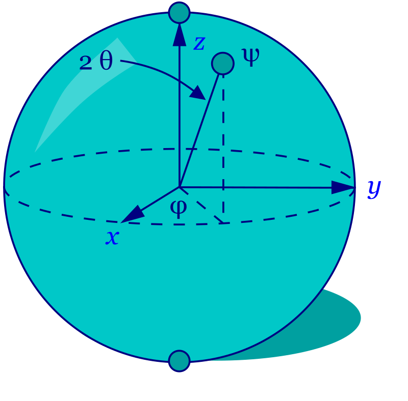
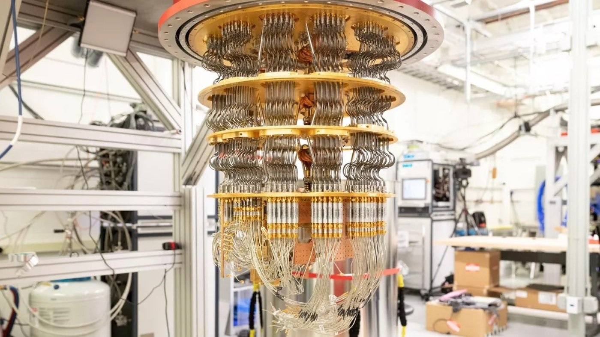
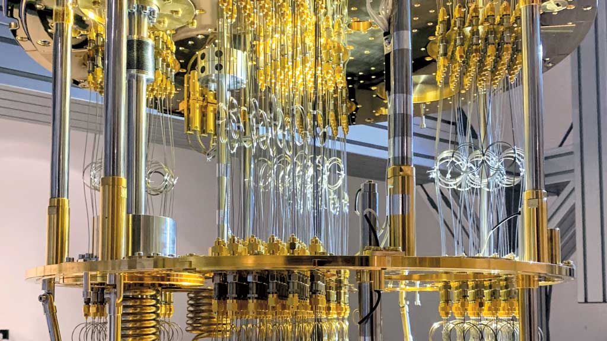
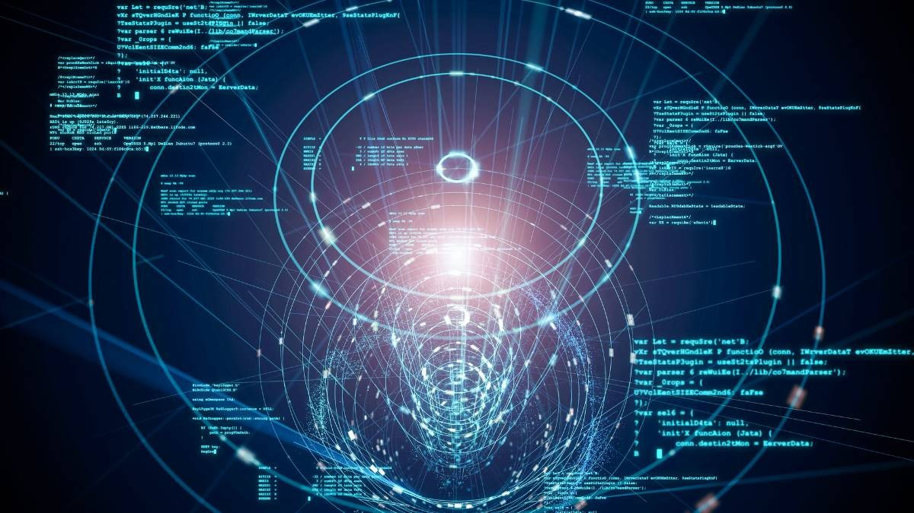

Computação Quântica |
Home |
Sobre |
Contato |
|
|---|---|---|---|---|
|
|
O que é Computação Quântica? É um campo multidisciplinar que compreende aspectos da ciência da computação, da física e da matemática e que utiliza a mecânica quântica para resolver problemas complexos mais rapidamente do que em computadores tradicionais. O campo da computação quântica inclui pesquisa de hardware e desenvolvimento de aplicações. Os computadores quânticos são capazes de resolver certos tipos de problemas mais rapidamente do que os computadores tradicionais, aproveitando os efeitos da mecânica quântica, como superposição e interferência quântica. Algumas aplicações em que os computadores quânticos podem fornecer esse aumento de velocidade incluem machine learning (ML), otimização e simulação de sistemas físicos. Eventuais casos de uso podem ser a otimização de portfólios em finanças ou a simulação de sistemas químicos, resolvendo problemas que atualmente são impossíveis até mesmo para os supercomputadores mais poderosos do mercado. |
|---|
Qual é a vantagem da Computação Quântica? Atualmente, nenhum computador quântico pode executar uma tarefa útil de forma mais rápida, barata ou eficiente quando comparado a um computador tradicional. A vantagem quântica está no limiar em que construímos um sistema quântico que pode realizar operações que nem mesmo o melhor computador tradicional consegue simular em um período razoável. |
|
|
|---|
O que é Mecânica Quântica? A mecânica quântica é a área da física que estuda o comportamento das partículas em um nível microscópico. Em níveis subatômicos, as equações que descrevem como as partículas se comportam são diferentes daquelas que descrevem o mundo macroscópico ao nosso redor. Os computadores quânticos aproveitam esses comportamentos para realizar cálculos de uma maneira completamente nova. |
|

|
O que é um Bit Quântico? Bits quânticos, ou qubits, são representados por partículas quânticas. A manipulação de bits quânticos por dispositivos de controle é a essência da capacidade de processamento de um computador quântico. Bits quânticos em computadores quânticos são análogos aos bits em computadores tradicionais. Em sua essência, o processador de uma máquina tradicional realiza todo o seu trabalho ao manipular bits. De forma semelhante, o processador quântico realiza todo o seu trabalho ao processar bits quânticos.
|
|---|
Quais são os princípios da Computação Quântica? Um computador quântico funciona usando princípios quânticos. Os princípios quânticos requerem um novo dicionário de termos para serem totalmente compreendidos. Os termos incluem superposição, entrelaçamento e decoerência. Vamos entender esses princípios a seguir.
A superposição afirma que, assim como as ondas na física clássica, você pode adicionar dois ou mais estados quânticos e o resultado será outro estado quântico válido. Por outro lado, você também pode representar cada estado quântico como uma soma de dois ou mais estados distintos. Essa superposição de bits quânticos fornece aos computadores quânticos seu paralelismo inerente, permitindo que processem milhões de operações simultaneamente.
O entrelaçamento quântico ocorre quando dois sistemas se ligam tão intimamente que o conhecimento sobre um fornece a você
conhecimento imediato sobre o outro, não importa quão distantes eles estejam. Os processadores quânticos podem obter conclusões
sobre uma partícula medindo outra. Por exemplo, eles podem determinar que, se um bit quântico tem rotações ascendentes, o outro
sempre terá rotações descendentes e vice-versa. O entrelaçamento quântico permite que os computadores quânticos resolvam problemas
complexos mais rapidamente.
A decoerência é a perda do estado quântico em um bit quântico. Fatores ambientais, como a radiação, podem causar o colapso do estado quântico dos bits quânticos. Um dos grandes desafios de engenharia na construção de um computador quântico é projetar vários recursos que tentam retardar a decoerência do estado, como a construção de estruturas especiais que protegem os bits quânticos de campos externos. |
Quais são os componentes de um Computador Quântico? |
|||
|---|---|---|---|
| Os computadores quânticos têm hardware e software, de forma semelhante a um computador tradicional. | |||
|

 |
Hardware Quântico O hardware quântico tem três componentes principais.
O plano de dados quânticos é a essência do computador quântico e inclui os bits quânticos físicos e as estruturas necessárias para mantê-los no lugar. O plano de controle e medição converte os sinais digitais em sinais analógicos ou de controle de ondas. Esses sinais analógicos executam as operações nos bits quânticos do plano de dados quânticos. O plano de processador de controle implementa o algoritmo quântico ou a sequência de operações. O processador host interage com o software quântico e fornece um sinal digital ou uma sequência de bits clássicos para o plano de controle e medição. |
||
|

|
Software Quântico O software quântico implementa algoritmos quânticos exclusivos usando circuitos quânticos. Um circuito quântico é uma rotina de computação que define uma série de operações quânticas lógicas nos bits quânticos subjacentes. Os desenvolvedores podem usar várias ferramentas e bibliotecas de desenvolvimento de software para programar código de algoritmos quânticos. |
||
Como as empresas usam a computação quântica? A computação quântica pode revolucionar as indústrias. Veja abaixo alguns exemplos de casos de uso:
O machine learning (ML) corresponde ao processo de análise de grandes quantidades de dados para ajudar os computadores a fazer melhores previsões e decisões. A pesquisa em computação quântica estuda os limites físicos do processamento de informações e está abrindo novos caminhos na física fundamental. Essa pesquisa conduz avanços em muitos campos da ciência e da indústria, como a química, a otimização e a simulação molecular. Também é uma área de interesse crescente aos serviços financeiros para previsão dos movimentos do mercado e aprimoramento das operações de manufatura. A computação quântica pode melhorar a pesquisa e o desenvolvimento, a otimização da cadeia de suprimentos e a produção. Por exemplo, você pode aplicar a computação quântica para diminuir os custos relacionados ao processo de fabricação e diminuir os tempos de ciclo otimizando elementos como o planejamento de caminhos em processos complexos. Outra aplicação é a otimização quântica de carteiras de empréstimos para que os credores possam liberar capital, reduzir as taxas de juros e melhorar suas ofertas. O esforço computacional necessário para simular sistemas com precisão escala exponencialmente com a complexidade das moléculas e materiais de medicamentos. Mesmo usando métodos de aproximação, os supercomputadores atuais não conseguem atingir o nível de precisão que essas simulações exigem. A computação quântica tem potencial para resolver alguns dos problemas computacionais mais desafiadores enfrentados na química, permitindo que a comunidade científica faça simulações químicas que são intratáveis atualmente. Por exemplo, a Pasqal desenvolveu seu software computacional QUBEC para executar simulações químicas. O QUBEC automatiza o trabalho complexo necessário para a execução de tarefas computacionais quânticas, desde o provisionamento automático da infraestrutura de computação até a execução de cálculos clássicos de pré e pós-processamento, bem como a execução de tarefas de mitigação de erros. |
|
|
|---|
Como você pode começar a usar a computação quântica?
Se você desejar experimentar a computação quântica, pode começar com um emulador de hardware quântico em sua máquina local.
Os emuladores são softwares regulares que imitam o comportamento quântico em um computador tradicional. Eles são previsíveis
e permitem que você veja estados quânticos. Eles são úteis se você deseja testar seus algoritmos antes de investir em tempo
de hardware quântico. No entanto, eles não podem recriar o comportamento quântico real.
|
Voltar ao Topo